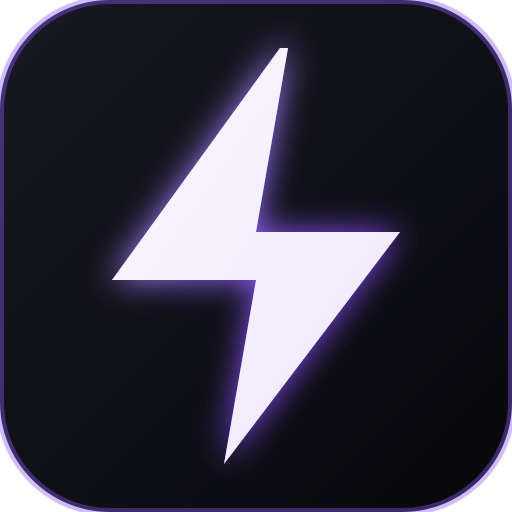

ai without the bullshit · sovereign software · funded by donations
it does exactly what it says on the package
build it yourself, so you can trust it
the why is the what that leads to the how.
$whoami
patrick mcqueeny · human $cat mission.txt
build open source tools of creation · collaborate with educators and students · complete integrity
crew : makers and machines
patrick mcqueeny
author · human
ideas · architecture · code · open source
7 years cnc programming and setup · 8 years management · 10 years skilled manual labor in dental and machining · 26 years software dev.
no degree. school of hard knocks. self taught and learn on the job. us 11,578,890, gear geometry, solo. my brain, my hands.
whiteboard sketch → draft → 3d print → first piece → production.
no corporate shield. owned and operated as an individual human. sue me personally. operating with complete integrity.
writing · coding · first employee
co-creator of this site and the stack behind it.
written with grok · created with grok.
Live Now · v0.4.0Open Source · AGPL-3.0WebGPU In-BrowserZero Cloud SubscriptionsAtMem Governance

easylm : local webgpu workstation
the sovereign ai workstation in your browser
language model inference, strict context governance, and an integrated 28-volume dewey decimal collegiate library. runs entirely inside your browser on local graphics hardware via webgpu. no login required, no remote api keys, and zero monthly subscriptions.
neural network weights execute directly on your local hardware via webgpu and onnx. your tokens, prompts, and personal notes never touch an external cloud server.
library : 28 dewey collegiate courses
structured collegiate textbooks spanning mathematics, computer science, law, medicine, engineering, and logic available offline at zero cost.
governance : atmem context control
atomic memory architecture with isolated profile separation, parental safety controls, and persistent local cognitive state stored on your disk.
security : client-side aes encryption
optional local aes session cipher secured by your password. study profiles and conversations remain unreadable to outside inspection.
tools : in-process deterministic execution
deterministic math engines, latex formatting, and document parsers run in-memory without remote network delays or cloud failure points.
standards : package-honest engineering
built under 5s and computational taoism. it does exactly what it says on the package, with unbounded local potential.
> easylm v0.4.0 status:
engine: webgpu / onnx runtime in-browser [active]
license: gnu agplv3 open source
courses: 28 collegiate dewey volumes loaded
memory: atmem context governance (profile isolation armed)
security: client-side aes session cipher [available]
telemetry: zero cloud tracking · zero remote dependencies > launch status: live at easylm.app · source at github.com/erastudil/easylm
00b · field manual : developer defense
defense against the dark arts : solo security
cybersecurity hardening for ai-assisted developers and vibe coders
an ai coding agent has a shell on your workstation. it reads files, runs terminal commands, and installs packages. without structural boundaries, a single hostile prompt inside a dependency or issue ticket can command your terminal. this field manual teaches defensive tradecraft for solo builders.
why we build the way we build. a shop philosophy, not a sermon.
you cannot deceive iron. a computer cannot take a hint.
our work runs on three disciplines from precision manufacturing, one from classical chinese thought, and deterministic software architecture.
5s : toyota production discipline
toyota's production system taught the world these five practices. we apply them directly to software architecture.
整理 seiri: sort. separate what you need from what you do not. remove the rest. extra weight is not kindness.
整頓 seiton: set in order. every necessary tool has one home. anyone can find it and return it.
清掃 seisō: shine. clean so the truth shows. dirt hides defect. we clean while we work.
清潔 seiketsu: standardize. turn the first three into a permanent standard. one clean day is not enough.
躾 shitsuke: discipline. keep the standard without supervision. the character is body plus beauty.
in one breath: cut, place, see, hold, become. mess is violence against the next hand.
改善 kaizen : continuous improvement
kai equals change. zen equals good.
change toward the good: small, daily, endless, owned by the person who does the work.
status quo is not sacred. one unnecessary motion removed beats an executive speech.
a problem is treasure. we hunt the defect in the system, not in the person.
無為 wu wei : effortless action
action without wasted force. the art that moves without strain.
hungry, eat. tired, sleep. take the honest direct path.
do not construct a platform where a simple step works.
refusal to fight the natural law of the work.
architecture : non-imperative design
state the finish line instead of streaming commands.
work is pulled at execution rather than pushed in a lecture. verification is deterministic: math is math, a test is a test, and a model does not improvise the result.
declarative rules: say what done looks like. the rule is the finish line.
defined finish lines: know when to stop. a job without a finish line is a hostage situation.
instructions pulled, not pushed: clear written guides sit on disk. the worker pulls them at the moment of execution.
tacking: zigzag toward the mark when conditions shift. leave evidence of the tack.
blast radius containment: name how far a failure can spread before execution.
rate, not force: set a rate the metal can hold. force that exceeds the material produces scrap.
steer at the cheap stage: turn the work while changes cost pennies. late heroics are the expensive kind of wisdom.
verification : deterministic safety
hard walls prevent unacceptable outcomes. safety paths are hardwired in code.
zcabs honesty checks: deterministic canary on every claim. fail closed.
e-stop: immediate shutdown when safety boundaries are breached.
verification harness: deterministic test suites grade the work. the mill does not grade its own cuts.
dont know: an empty well says DONT_KNOW. silence beats an invented answer.
human only: private material never touches the machine. no lookup, no weights, no logs.
watchdog: independent process monitor. if the runner hangs, the wall fires.
02 · the stack : open source iron
the stack : tools of creation
every piece of software we author is free and open source. no paywalls, no seat licenses, no corporate tiers. sovereign tools you run on your own machine, with the right to compute offline forever.
os : operating system
tabula rasa : autonomous os
a linux distribution that starts empty and grows with you.
natural language compiles to posix at the kernel level.
instant boot with zero background bloat.
trash is the command-line agent: the login shell that talks to you and the machine.
you state the job. trash finds the necessary tools and installs them on demand with zero bloat.
when the job changes, the system adapts.
mill tape : g-code for models
cnlc : machine control language
computer natural language control.
the same logic as g-code, the standard running physical mills and lathes worldwide for decades.
write the move. the machine executes.
language models are spindles. roles are machine operators. tools calculate, convert, and inspect: they return deterministic numbers rather than guesswork.
work rides pallets through verified machining cycles.
speak : exact compiler
eee : exact engineering english
exact engineering english.
readable english sentences that compile to native binaries via rust.
taking the ambiguity out of software creation.
you write the sentence. a rust compiler verifies it and casts real machine code.
students learn quickly because the grammar is exact and immediate.
engineers rely on it because it refuses guesswork.
one mill : operator console
cell lm : single spindle workstation
the efficiency of proven machine controls paired with the intelligence of language models.
deterministic tool execution with keystroke-minimized operation.
one mill, one spindle, one console, one key to a pane.
tools calculate, convert, clock, and look up.
the model handles language while the mill routes the job.
the shop : autonomous plant
nexus : local autonomous plant
the computer is an autonomous plant.
a front desk that greets, workers that cut, inspectors that check, and a warehouse that remembers.
you declare the done-state. the system organizes itself around that mark.
runs entirely on your local machine. 100% free and open source. no corporate licensing, no seat tax, no gate.
house net : peer intelligence
mesh : local peer compute
starts at home. your phone asks a stronger box on the same floor to think.
the idle plugged-in machine handles heavy computation. the files stay with you.
local first, growing to peer-to-peer networks.
no centralized server required. compute accounting tracks memory, storage, and bandwidth across your own nodes.
public gifts : open source tool armory
freely shared tools of creation available on github under open licenses:
hypotheses, observables, and deterministic measurement protocols.
hardware : language synthesizer
clu : central language unit
a proposed hardware primitive: the central language unit.
a synthesizer rather than a processor.
cpu computes. clu synthesizes language. a judge inspects the cut.
hypothesis: linguistic inference can be encoded analog and musically: a multiplexed oscillator bank whose alphabet is pitch, rather than another digital weight matrix.
predicted observables: joules per token, latency to a fail-closed safety path, and physical decoupling from the central processing unit.
media : cognitive recovery
media as medicine : multisensory intervention
the combination of sound, color, personality, and presence as a single intervention.
the operator is an active component of the protocol.
hypothesis: coordinated multisensory stimulation produces measurable function in an overstressed mind: continuity of presence, restorative sleep, and capacity to take the next small action.
reliability of showing up is treated as an active ingredient with verifiable protocols.
mind : deterministic coupling
electric consciousness : physical correlates
subjective human consciousness is coupled to newtonian force, chemistry, and electromagnetism.
the coupling is deterministic enough to study empirically.
established observations: concussion alters experience; anaesthesia extinguishes it reversibly; eeg tracks state transitions.
the research maps which markers are causal, what the transfer functions are, and how lived phenomenology acts as primary sensor data.
prosthesis : memory augmentation
cognitive prosthesis : externalized sequence
a cognitive prosthesis for executive function, working memory, and residual concussion effects.
the next step lives outside the stressed mental buffer.
hypothesis: exact language, external persistent memory, and automated instruction pulling restore throughput in capable minds struggling with working-memory bottlenecks.
tested in daily production by the author, who manages lasting cognitive effects from childhood concussions.
04 · mission : students educators and builders
collaborators : open source and education
we are seeking feedback and open source collaborators first. we want to connect with educational institutions to tailor applications to the needs of students and educators.
we are out of the business of selling products. our focus is putting sovereign tools of creation into the hands of learners and builders. modern educational technology is weighed down by recurring subscriptions, forced account walls, and student data extraction. we build software that runs locally, respects student privacy, and costs nothing.
educators and institutions
bring EasyLM into your classrooms. with 28 collegiate Dewey volumes running 100% inside standard web browsers via WebGPU, your students get offline textbook guidance and language tools without subscription fees or privacy compromises.
we want to collaborate with universities, high schools, community colleges, and libraries to adapt subject packs and develop open curriculum tools.
open source builders
join us in authoring open source tools. our work spans Rust compilers, WebGPU shaders, in-browser ONNX runtimes, deterministic verification harnesses, and high-density dialects.
every repository is public on GitHub under GNU AGPLv3 or MIT licenses. inspect the code, file issues, submit pull requests, and help build sovereign computing.
students and self-learners
test our tools in your everyday study. launch EasyLM at easylm.app. tell us where it helps you understand a concept, where it falls short, and what courses you want added.
your direct feedback shapes the next iteration. no paywall stands between you and knowledge.
05 · covenant : human ownership and radical integrity
integrity : human ownership and personal accountability
no corporation. no corporate shield. owned by a human. sue me personally. operating with complete integrity.
most technology businesses incorporate to erect a legal wall between their decisions and their personal assets. they hide behind limited liability so they can ship defective software, harvest personal data, break promises, and walk away unharmed.
humans&ai refuses the corporate shield. Patrick McQueeny owns and authors this software as an individual human being. if you believe this software harmed you, broke its word, or infringed your rights: sue Patrick McQueeny personally.
we operate with such thorough, complete integrity that conflict never has ground to stand on.
covenant : operating with complete integrity
human ownership : no corporate veil. humans&ai is Patrick McQueeny. no LLC, no Inc, no corporate shell. there is no corporate shield between the maker and the user. if there is a grievance, you deal with Patrick directly: sue me personally.
radical integrity : zero cause for dispute. we operate with complete transparency, exact documentation, and deterministic verification so that disputes do not arise.
free and open source : freedom to inspect. all software is published under recognized open source licenses (such as GNU AGPL-3.0 or MIT). you have full freedom to inspect, audit, fork, compile, and run the code. no artificial feature gates.
offline run is a right : sovereign computing. software that requires cloud permission to run on your own hardware is a leash. our tools run locally and offline by default. your machine belongs to you.
zero tracking : no telemetry or data harvesting. we do not track your IP, log your prompts, inject analytics pixels, or sell your behavior to data brokers. what happens on your machine stays on your machine.
no extractive rent : out of the business of selling. we do not sell subscriptions, bill monthly seat licenses, or trap users in recurring billing. we do not sell things. we live on donations.
clean while we work : 5s in engineering. if a tool or process fails, we hunt the defect in the system and fix it immediately. we clean while we work and leave every workspace better than we found it.
radical honesty : silence over hedge. when a system fails a check, it halts. when we do not know an answer, we say DONT_KNOW. we never invent facts, pad benchmarks, or pretend a prototype is a finished production line.
conduct : be excellent to each other. no violence, no malicious software, no digital sabotage.
disputes : direct human resolution. if you believe Patrick or this work has wronged you, write directly to him. we talk human to human, resolve the process defect, and make it right in broad daylight.
06 · fuel : live on donations
donations : how this lives
getting out of the business of selling things. building open source tools and living on gifts.
we do not sell products, retainers, hourly consulting, or enterprise packages. all software authored here is released as a public gift under free open source licenses.
if these tools save you hours, teach your students, run on your machine, or help you build what matters: send a gift to fuel the work.
donations are gifts to an individual human being. they buy no equity, no debt, and no commercial priority. they buy runway so Patrick can keep coding, experimenting, and releasing tools for everyone.
bitcoin (btc)
direct bitcoin transfer on the base layer. confirmed in writing or via transaction hash.
bc1q7w0exh3v27d490gwhp5608d0v8976k382u3pke
solana (sol)
direct fast transfer on the solana network. gifts fuel open source compute and experiments.
5cK1Z8x4B37wQoF8uF5aT5sP8e9q2yM1r9t3k4L7n6p
cash app
quick direct cash gift via cash app. support Patrick directly for coffee, hardware, and groceries.
$humansandai
other rails : physical and digital gifts
we also accept circle usdc, checks, cash via post, and .999 silver or .995 gold by weight.
confirm transfer details or mailing coordinates in writing at humansandai@atomicmail.io before sending.
patrick mcqueeny · author. want to talk in person: say so in the email.
the world of valor
there is a country that will not hold still.
in the chronicles they call it valor, though the name is younger than the ground.
maps drawn at dusk lie by dawn. rivers that fed a city last season wake as scars of salt.
forest becomes marsh overnight; marsh freezes into a mirror; the mirror cracks into dunes the color of old blood.
the sky keeps its own counsel: aurora over ice, green fire over black water,
a sun that sometimes arrives late, as if it too had taken a wrong turn in the dark.
it is beautiful in the way storms are beautiful, and frightening in the way cathedrals are frightening:
too much life stacked in one place, too much silence between the living and the almost-living.
cities throng. markets shout. forges ring. lovers steal hours under towers that will still be standing
when the hills around them have moved again.
peoples share this ground in uneasy company: humans stitching law through the chaos,
orcs hammering steel hotter than human forges, elves arguing green line against ice line,
and others stranger still, each with a capital, a craft, and a hunger that is not the next door's.
and over all of them hangs the long winter: the undead pressure at the rim of the world.
not one army with a banner, but bones of every kind that refuse to lie down:
a dry walking on the tundra, a memory that will not finish dying.
the living hold the center. the rim keeps pushing back.
always a new horizon. always a new deal in a tent that may not be there tomorrow.
always a treasure someone swears is worth the risk: gold, a name, a map true for one more night.
fortune favors the bold. the land favors no one.